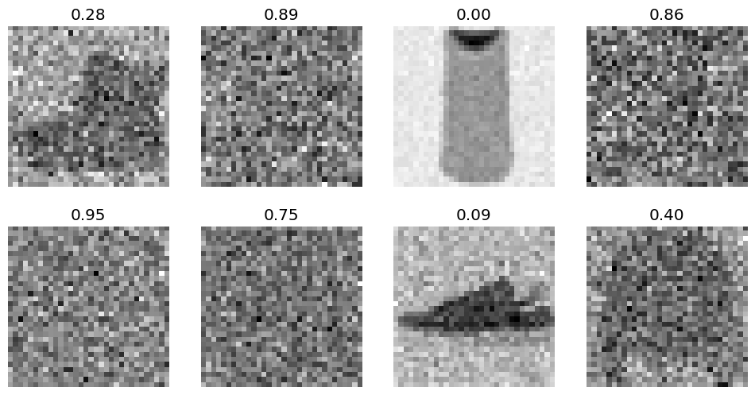

aesthetics()Cosine scheduler, revisited
In this module, we radically simlify the DDPM algorithm by constraining time between 0 and 1
Adapted from
The idea we’ll be exploring is the removing the concept of having \(\frac{t}{T}\)
aesthetics
aesthetics ()
Improve the look and feel of our visualizations
Often in diffusion, we refer to time steps like so
T = 1000
for t in range(T):
print(f"Progress: {t/T}")Jeremy notes that we can simply use a progress variable \(\in [0, 1]\). This allows us to simplify the \(\bar{\alpha}\) expression like so:
ᾱ
ᾱ (t, reshape=True, device='cpu')
x = torch.linspace(0, 1, 100)
plt.plot(x, ᾱ(x, reshape=False));And, furthermore, the noisify function can be simplified like so:
noisify
noisify (x_0, t=None)
Now, (a) we don’t have to deal with knowing the time steps, computing \(\alpha\) and \(\beta\) and (b) the process is continuous.
Let’s add this to the DDPM training callback. Notice that the constructor has been deleted.
ContinuousDDPM
ContinuousDDPM (n_steps=1000, βmin=0.0001, βmax=0.02)
Modify the training behavior
dls = get_dls()
xb, _ = dls.peek()
xb.shape # Note: 32x32torch.Size([128, 1, 32, 32])We can use the parameters from our training run in the previous notebook.
fp = Path("../models/fashion_unet_2x_continuous.pt")
ddpm = ContinuousDDPM(βmax=0.01)
if fp.exists():
unet = torch.load(fp)
else:
unet = fashion_unet()
train(
unet,
lr=1e-2,
n_epochs=25,
bs=128,
opt_func=partial(torch.optim.Adam, eps=1e-5),
ddpm=ddpm,
)
torch.save(unet, fp)f"{sum(p.numel() for p in unet.parameters() if p.requires_grad):,}"'15,890,753'To denoise, we need to reverse the noisification. Recall, for a given sample \(x_0\), the noised sample is defined as: x_t = ᾱ_t.sqrt() * x_0 + (1 - ᾱ_t).sqrt() * ε \[ x_t = \sqrt{ \bar{\alpha}_t } x_0 + \left( \sqrt{ 1 - \bar{\alpha}_t } \right) \epsilon \]
Thus,
\[ x_0 = \frac{ x_t - \left( \sqrt{ 1 - \bar{\alpha}_t } \right) \epsilon }{ \sqrt{ \bar{\alpha}_t } } \]
denoisify
denoisify (x_t, noise, t)
(x_t, ts), eps = noisify(xb)
show_images(x_t[:8], titles=[f"{t.item():.2f}" for t in ts[:8]])
This looks impressive for one step, but recall xb is part of the training data.
eps_pred = unet(x_t.to(def_device), ts.to(def_device)).sample
x_0 = denoisify(x_t, eps_pred.cpu(), ts)
show_images(x_0[:8])Finally, we can rewrite the sampling algorithm without any \(\alpha\)s or \(\beta\)s. The only function we need is \(\bar{\alpha}_t\), which are part of the noisify and denoisify functions. This also means we can make the sampler a single, elegant function.
ddpm
ddpm (model, sz=(16, 1, 32, 32), device='cpu', n_steps=100)
x_0 = ddpm(unet, sz=(8, 1, 32, 32), n_steps=100)
show_images(x_0, imsize=0.8)100%|████████████████████████████████████████████████████████████████████████████████████████████████████████████████████████████████████████| 99/99 [00:01<00:00, 67.69time step/s]This code had a few bugs in it initially that led to deep-fried results.
denoisifywas giventorch.randninstead ofnoise_pred- The last denoising iteration was given
t=1instead oft=0
Let’s try this with DDIM
ddim_noisify
ddim_noisify (η, x_0_pred, noise_pred, t, t_next)
ddim
ddim (model, sz=(16, 1, 32, 32), device='cpu', n_steps=100, eta=1.0, noisify=<function ddim_noisify>)
x_0 = ddim(unet, sz=(8, 1, 32, 32), n_steps=100)
show_images(x_0, imsize=0.8)100%|████████████████████████████████████████████████████████████████████████████████████████████████████████████████████████████████████████| 99/99 [00:01<00:00, 70.26time step/s]bs = 128
eval = ImageEval.fashion_mnist(bs=bs)x_0 = ddim(unet, sz=(bs, 1, 32, 32), n_steps=100)
eval.fid(x_0)100%|████████████████████████████████████████████████████████████████████████████████████████████████████████████████████████████████████████| 99/99 [00:03<00:00, 30.48time step/s]764.1282958984375Directly comparing this to DDPM:
x_0 = ddim(unet, sz=(bs, 1, 32, 32), n_steps=100, eta=0.0) # eta=0 makes this DDPM
eval.fid(x_0)100%|████████████████████████████████████████████████████████████████████████████████████████████████████████████████████████████████████████| 99/99 [00:03<00:00, 30.55time step/s]818.5997314453125and a real batch of data
xb, _ = dls.peek("test")
eval.fid(xb)158.8096923828125